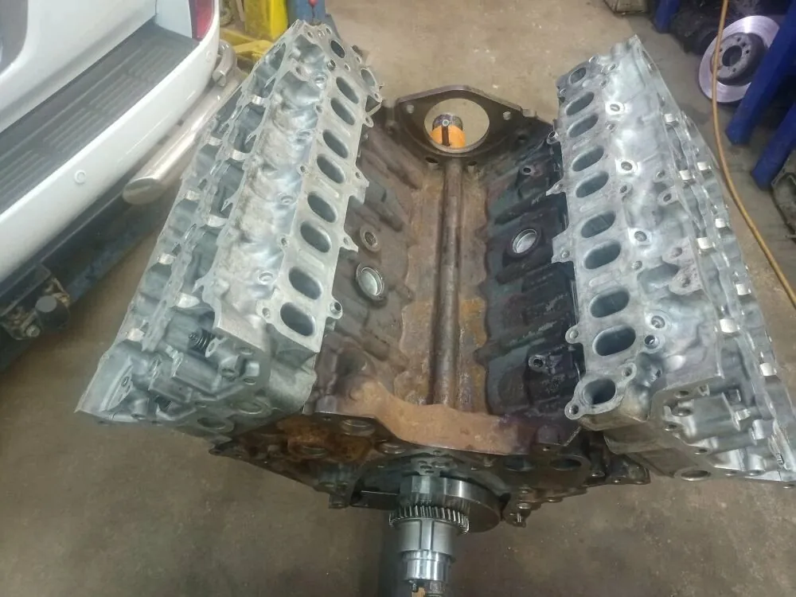
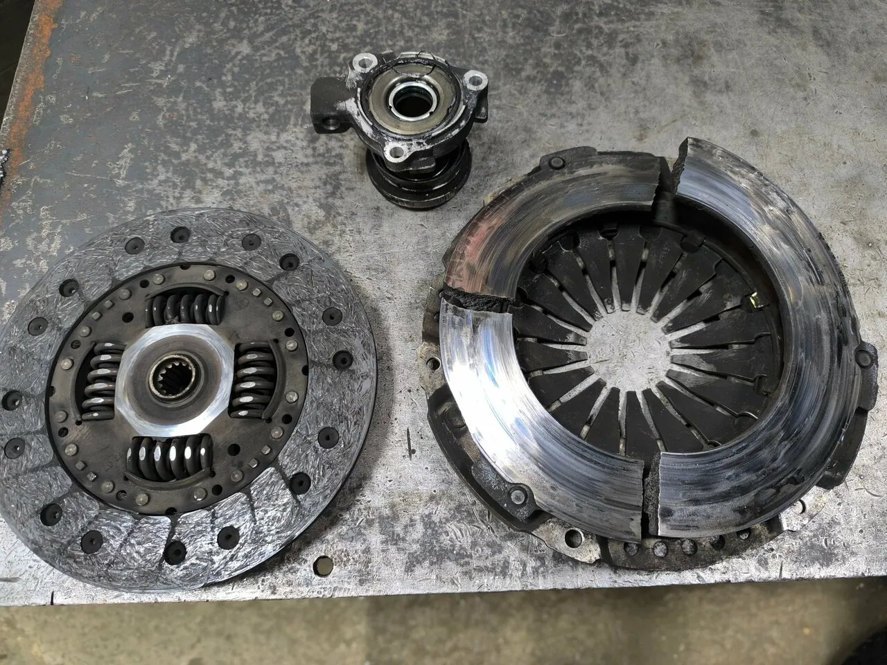
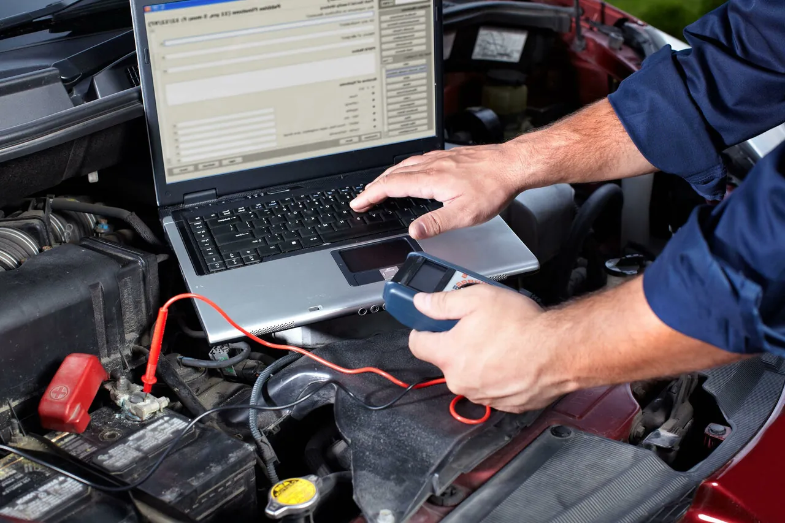
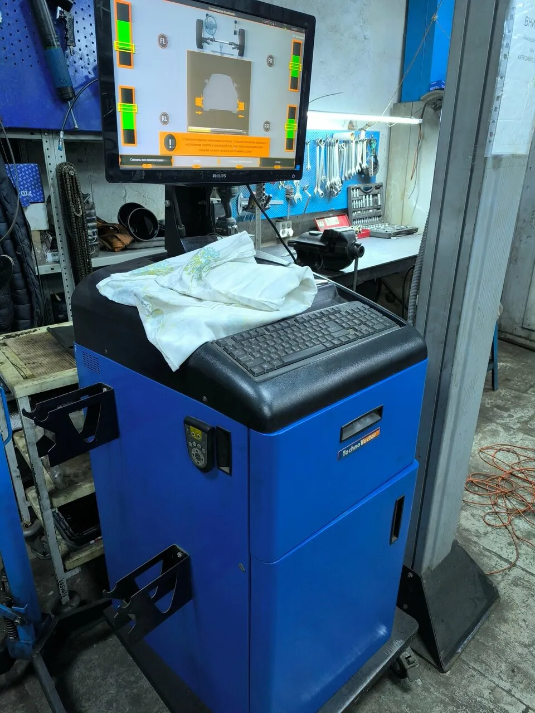
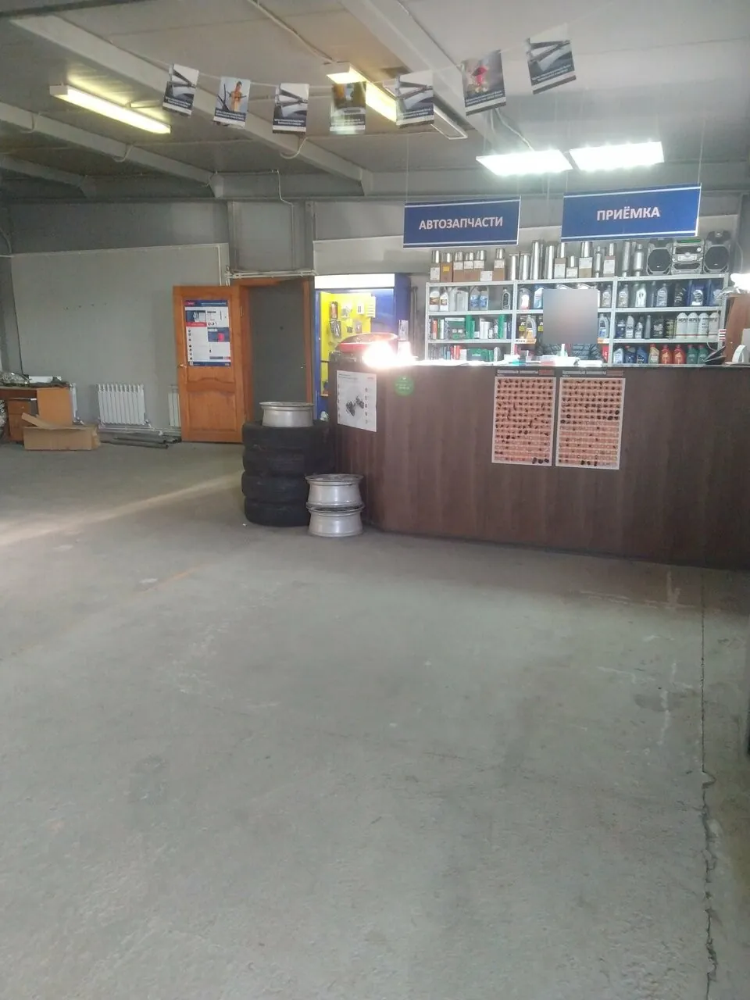
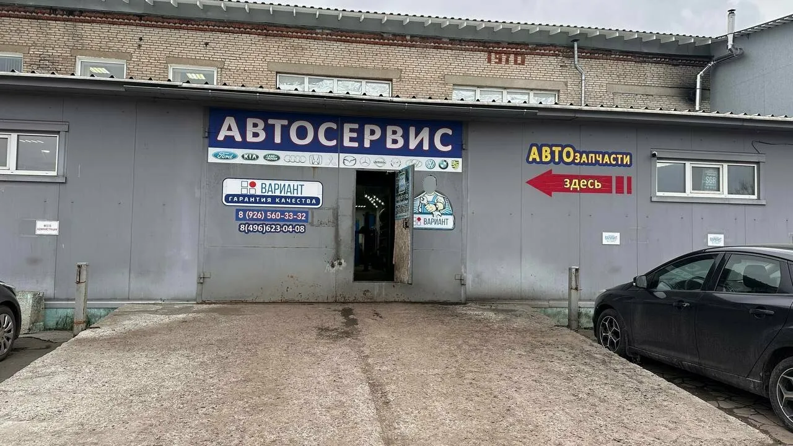

Запишитесь заранее
«Только записываться надо заранее.»
Евгения СеливановаКоломна, ул. Леваневского, 36 · вт–вс 9–19
Вариант – ремонт двигателей и коробок, ходовой и рулевого, электрика, развал-схождение и ТО. Клиенты пишут, что обслуживаются здесь по 15 и 20 лет.
«квалифицированный коллектив не меняющийся многие годы , а это говорит о многом !»Сергей С.
Детали ждут мастера
Цифры не из рекламы – их назвали сами клиенты в отзывах на Яндекс Картах.
«В этом сервисе с 2006 года, В Коломне - только сюда.»
Nataly«Обслуживаюсь уже 20 лет и только в этом сервисе.»
Юлия«Обслуживаюсь в нём уже лет 15.»
Денис Виноградов«Проехал 70000км после ремонта, все без нареканий!»
Дмитрий Л., капремонт двигателяДвигатели и ГБЦ, коробки и сцепление, рулевые рейки, генераторы и стартеры, ходовая, выхлоп, кондиционеры и ТО. Легковые и коммерческие машины.
«Благодарю мастера Владимира, за капремонт двигателя на Киа церато!»
Дмитрий Л.



В отзывах благодарят не «сервис», а конкретных людей.
«На все вопросы Владимир отвечал (в другом сервисе были молчуны и шептуны) нормально.»
Александр«Заменили рулевую рейку, сайлентблок на рычаге, свечи. Все сделали быстро и по адекватной цене. Алексей отличный мастер.»
Андрей Хакимов«Владимир и Алексей - позитивные, ответственные мастера и просто добрые люди. Спасибо, мужики!»
Антон М.«Спасибо хозяину Сергею Кравцову»
Nataly«мастеру-приемщику Володе за чуткое отношение к постоянным клиентам.»
Nataly«отдельное спасибо менеджеру Роману за отзывчивость, вежливое общение с клиентом.»
Отзыв на Яндекс Картах«Только записываться надо заранее.»
Евгения Селиванова«Магазин через стенку. Если нет нужной запчасти в наличии, быстро привозят.»
Денис Виноградов«В сервисе даже имеется зона для клиентов, где есть телевизор и Wi-Fi.»
Отзыв на Яндекс Картах
Цены из карточки сервиса на Яндекс Картах, они могли измениться. Выберите раздел – и уточните итог по телефону до начала работ.
Позиций: 0
Гарантия на работы: {{условия гарантии}}
4,8360 оценок и 144 отзыва на Яндекс Картах · «Хорошее место 2026»
Отличный Вариант. В этом сервисе с 2006 года, В Коломне - только сюда. Много лет ездила из Москвы обслуживать машину, потому как гарантия качества и цены сильно лучше. Запись примерно на неделю вперёд. Все четко организованно, никаких очередей. А Эдик точно знает волшебные слова к моей машине)) По электрике - пол Коломны у него. Позавчера на дороге прям практически отвалился глушитель, ну и SOS ремонт - оперативно приварили. Спасибо хозяину Сергею Кравцову, мастеру-приемщику Володе за чуткое отношение к постоянным клиентам.
Качественное обслуживание и профессиональные мастера. Обслуживаюсь уже 20 лет и только в этом сервисе. Всегда помогут с заказом запчастей и их установкой. Отдельное спасибо мастерам Владимиру и Алексею, вы лучшие и всегда только к вам.
Отличный сервис. Обслуживаюсь в нём уже лет 15. Никаких проблем. Персонал грамотный. Есть запись по телефону. Магазин через стенку. Если нет нужной запчасти в наличии, быстро привозят. Это лично моё мнение. Буду дальше тут обслуживать машину.
Благодарю мастера Владимира, за капремонт двигателя на Киа церато! Проехал 70000км после ремонта, все без нареканий! Теперь обслуживаюсь постоянно здесь каждое ТО раз в 10000км,примерно 1 раз в месяц! Всем сотрудникам данного тех центра, тоже огромное спасибо! Успехов вам!
Обратился с проблемой после установки новых амортизаторов в другом сервисе, где убеждали что все хорошо. Но был стук. Записался на диагностику, мастер Владимир. По моим жалобам провел диагностику, выявил нестандартную работу стойки, разобрал что мог. Вот уже неделю катаюсь, стук прошел. Рекомендую сервис. На все вопросы Владимир отвечал (в другом сервисе были молчуны и шептуны) нормально. Также в отличии от других сервисов, мастер работал без снисхождения к клиенту. Кто сталкивался, тот поймет.
Приехали к ребятам с сорванным болтом на колесе в субботу под закрытие сервиса, вошли в положение, приложили максимум усилий и устранили проблему. Денег взяли копейки, даже отказались взять больше, хотя предложили. Владимир и Алексей - позитивные, ответственные мастера и просто добрые люди. Спасибо, мужики!
Доброго времени суток! Хочу поделиться своим отзывом об автосервисе «Вариант» Очень хороший,квалифицированный сервис по г. Коломна . Не впервый раз уже обращаюсь к ребятам по поводу ремонта . Очень хороший подход к клиенту, перед началом большого ремонта что посоветовали в другом сервисе , ребята предложили провести Диагностику. Провели диагностику, выявили неисправные запчасти , и сразу же я заказал ! Записался на определенный день , ребята за пол дня произвели ремонт моего автомобиля! Советую всем данный автосервис , чистота и порядок на рабочих местах , а главное подход к клиентам ! Спасибо вам , обращусь еще и не раз к вам .
Спасибо ребятам. Особенно Роману и Владимиру. Был проездом в Коломне. Уже поздно ночью пропала зарядка. Помогли даже в такое позднее время. Все сделали за 2 часа. Достойно, качественно. Ценник по московским меркам смешной.
Огромная благодарность мастеру Алексею за отзывчивость и проффесианализм!!! Пошёл на встречу, принял в не очереди, в выходной день! Буквально спас, т.к. предстояла дальняя поездка. Везде отказывали, а он взял)) А главное нашёл и устранил неисправность! Машина полетела, как ласточка 🔥🔥🔥
Здравствуйте, хотелось выразить огромную благодарность за качественную работу этого сервиса. Делала сход-развал Ниссан Кашкай, качество поразило. По мимо этого была замена моторного масла и фильтров. Машинке подарили как будто новую жизнь. А так же, в сервисе чистота и порядок,отдельное спасибо менеджеру Роману за отзывчивость, вежливое общение с клиентом. В сервисе даже имеется зона для клиентов, где есть телевизор и Wi-Fi. Буду обращаться ещё а так же советовать друзьям. Спасибо!
Уже несколько лет обслуживаюсь в данном сервисе, мастера знают своё дело, и всегда помогут решить проблему. Цены соответствуют качеству выполненных работ, возможно они выше чем у других "кустарных" загонов. Зато качество выполненной работы лучше не найти как по мне.
Все очень хорошо. Быстро, квалифицированно и качественного. Лишнего не придумывают, все по делу. Только записываться надо заранее. И рядом еще магазин запчастей есть, могут на заказ привезти.

Открыть на Яндекс КартахМаршрут до сервиса